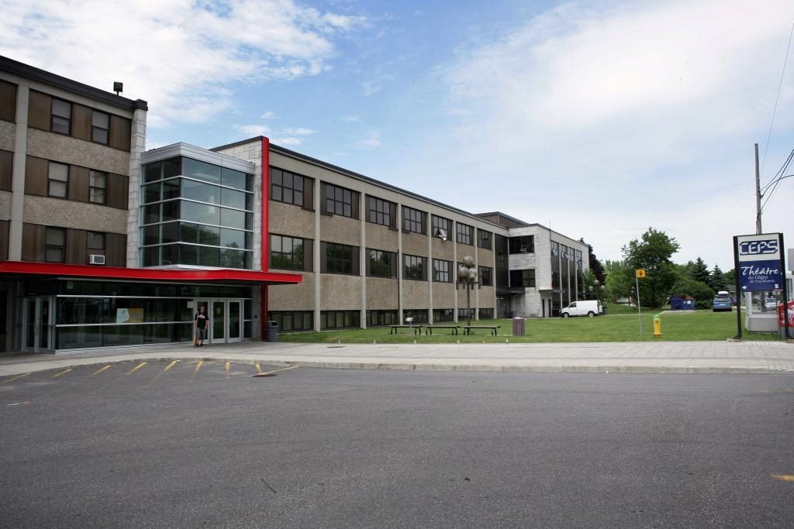
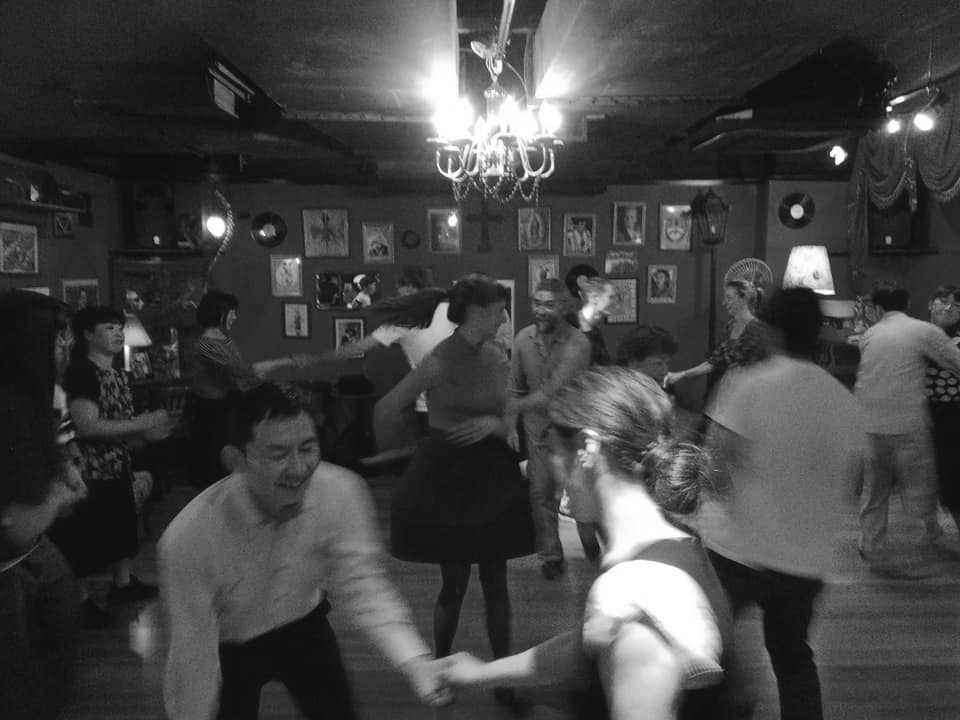
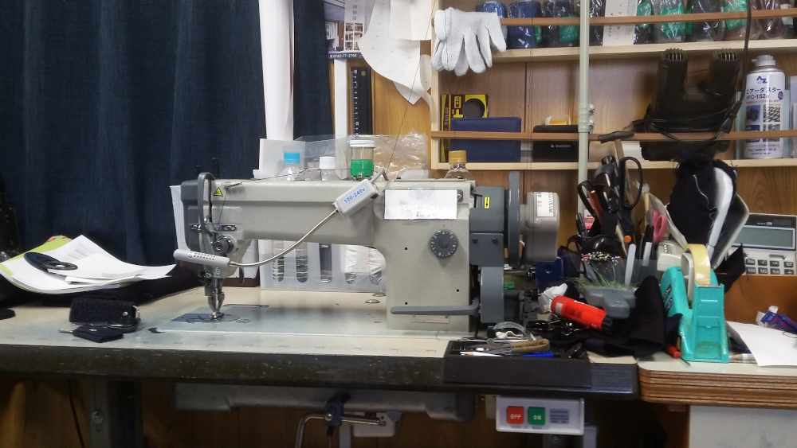
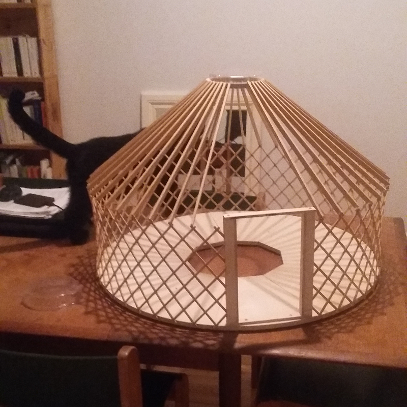

J'ai fait un BAC en Design à l'Université Concordia. Je crée des sites web sur Wordpress, à mon compte, depuis trois ans, et j'ai décidé de suivre l'AEC pour accroître mon champ d'expertise et éventuellement trouver du travail en entreprise.
Je danse le swing et je suis une amoureuse éternelle de randonnée.
| Nom du sport | Position | Expérience |
|---|---|---|
| Swing | Follow | 1 an |
| Randonnée pédestre | Au sommet de la montagne | 15 ans |
Depuis peu, je suis devenue une passionnée de couture. Je reviens d'ailleurs d'un voyage d'un an au Japon, où j'ai appris à coudre avec une grand-maman japonaise pleine de ressources!
Je souhaite m'établir dans une petite commune entre amis pour vivre le plus possible en harmonie avec mon environnement.
